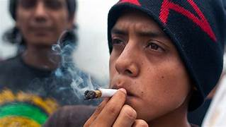

Consumo en preparatorias
En diversas preparatorias de Azcapotzalco, el consumo de sustancias como marihuana, alcohol y drogas sintéticas se ha convertido en un problema frecuente entre los estudiantes. La presión social, el estrés académico y la falta de orientación adecuada contribuyen a que muchos jóvenes experimenten con estas sustancias.

Problemas en secundaria
En el nivel secundaria, el problema es aún más delicado debido a la edad temprana de los estudiantes. Muchos adolescentes comienzan por curiosidad o por imitación de compañeros mayores, lo que puede generar consecuencias graves a largo plazo.
Opinión social
Desde una perspectiva social, es fundamental implementar programas de prevención dentro de las escuelas, así como campañas informativas dirigidas tanto a estudiantes como a padres de familia.